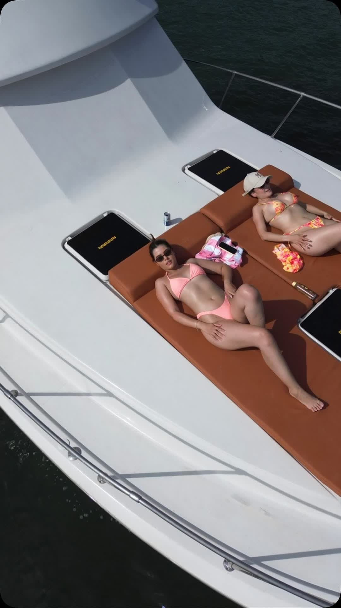

El día en que nadie tiene prisa
Sombra toda la tarde, agua donde se hace pie, y un capitán que da las instrucciones de seguridad en el idioma que tu familia realmente habla.

La sombra lo decide todo
Con abuelos o niños chiquitos, el bote que funciona es el Sea Ray Sundancer 40, que es cubierto. Seis horas de sol directo de Florida no son una tarde agradable para un niño de cuatro años ni para alguien de setenta, y no hay bloqueador que lo arregle.
Por eso no metemos a todas las familias en el bote más grande. El 45 tiene más espacio; el 40 tiene más sombra, y en un día en familia gana la sombra.

Anclamos donde se hace pie
La mayor parte de un día en familia pasa anclados, no navegando. Buscamos un punto donde el agua llegue más o menos al pecho de un adulto, sobre arena firme, para que nadie que no nade bien tenga que estar vigilado cada segundo.
Los chalecos de talla infantil van a bordo de serie — no hay que pedirlos ni traerlos. La piscina flotante se tira apenas paramos, y ahí normalmente se quedan los niños.

Las instrucciones de seguridad van en tu idioma
La mitad de nuestros grupos llevan a alguien que no habla inglés — normalmente la persona por la que se armó el día. Las instrucciones y toda la tarde van en español o en inglés, como hable tu familia.
Eso no es una frase de marketing. Si una persona en el bote no entiende qué hacer, todos en ese bote están menos seguros. Por eso lo decimos aquí y no escondido en letra chica.
Preguntas sobre paseos en familia
¿Tienen chalecos para niños?
Sí, las tallas infantiles van de serie en los tres botes. No hace falta pedirlos con anticipación ni traerlos, aunque puedes traer el suyo si el niño ya está acostumbrado a uno.
¿Cuál bote es mejor con niños chiquitos?
El Sea Ray Sundancer 40, que es cubierto. La sombra toda la tarde importa más que el espacio en cubierta cuando el más chico a bordo tiene cuatro años. Si el grupo es tan grande que necesita el Chris Craft 45, le montamos sombra.
¿Es seguro para quien no sabe nadar?
Anclamos en agua donde un adulto hace pie cómodamente, y hay chalecos para todos a bordo sin importar la edad. Avísanos antes si alguien no nada y elegimos el punto según eso.
¿Los abuelos pueden subir y bajar sin problema?
El Sundancer 40 es el más fácil de abordar de los tres y tiene plataforma de baño con escalera en la popa. Menciona la movilidad al reservar y el capitán acerca el bote en vez de esperar que alguien baje un escalón.
¿Cuántos son y de qué edades?
Las edades cambian el bote que te pondríamos y dónde anclaríamos. Dinos y te decimos qué haríamos.
Otras celebraciones
Despedida de soltera en bote
Hasta 13, el día entero en fotos, y la novia sin organizar nada.
Cumpleaños en bote
El bizcocho en frío, tu playlist, y el motor apagado con el downtown detrás.
Paseo al atardecer
Cuarenta minutos buenos, calculados hacia atrás desde el sol. El paseo más corto.
Día en el banco de arena
Agua a la cintura, arena blanca debajo, y la piscina flotante afuera.
Fotos con el skyline
Star Island, las casas grandes, y la hora en que la luz cae sobre la ciudad.
Eventos corporativos en el mar
Hasta 13, reservado con el capitán, con factura, y sin agencia de eventos en el medio.
Grupos grandes
¿Son demasiados para un solo bote? Salen los tres juntos y se amarran en el banco de arena.
Noches románticas en el mar
El bote entero para dos, la mesa de la bañera, y un capitán que no sale en las fotos.
Esparcir cenizas en el mar
Un bote privado más allá de las tres millas, y todo el tiempo que necesites con el motor apagado.